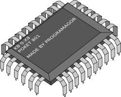

Welcome to DownloadMoreCores.com!
Is your computer running slower than you wish? Most computers nowadays come with multiple cores. Having multiple cores allows your computer to run more programs concurrently. Installing more cores to your computer will improve its performance, particularly on software that is optimized for parallel processing like games and engineering software.
How it Works:
If you asked someone to upgrade the number of cores on your computer, you will probably be told you have to buy a new CPU. This is a conspiracy by PC manufacturers! "Virtual cores" are just as good as physical cores, and can be installed for free. This website allows you to download software that installs more virtual cores.